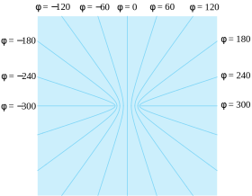
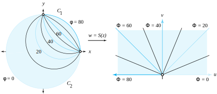

A two-dimensional electrostatic field is produced by a system of charged wires, plates, and cylindrical conductors that are perpendicular to the \(z\) plane. The wires, plates, and cylinders are assumed to be long enough so that the effects at the ends can be neglected, as mentioned in Section 10.4. This assumption results in an electric field \(\mathbf{E}(x,y)\) that can be interpreted as the force acting on a unit positive charge placed at the point \((x,y)\text{.}\) In the study of electrostatics, the vector field \(\mathbf{E}(x,y)\) is shown to be conservative and is derivable from a function \(\phi(x,y)\text{,}\) called the electrostatic potential, expressed as
If we make the additional assumption that there are no charges within the domain \(D\text{,}\) then Gauss’s law for electrostatic fields implies that the line integral of the outward normal component of \(\mathbf{E}(x,y)\) taken around any small rectangle lying inside \(D\) is identically zero. A heuristic argument similar to the one we used for steady state temperatures, with \(T(x,y)\) replaced by \(\phi(x,y)\text{,}\) will show that the value of the line integral is
\begin{equation*}
-[\phi_{xx}(x,y) + \phi_{yy}(x,y)] \Delta x \Delta y\text{.}
\end{equation*}
This quantity equals zero, so we conclude that \(\phi(x,y)\) is a harmonic function. If we designate \(\psi(x,y)\) as the harmonic conjugate, then
is the complex potential (not to be confused with the electrostatic potential).
The curves \(\phi(x,y) =K_1\) are called the equipotential curves, and the curves \(\psi(x,y) =K_2\) are called the lines of flux. If a small test charge is allowed to move under the influence of the field \(\mathbf{E}(x,y)\text{,}\) then it will travel along a line of flux. Boundary value problems for the potential function \(\phi(x,y)\) are mathematically the same as those for steady state heat flow, and they are realizations of the Dirichlet problem where the harmonic function is \(\phi(x,y)\text{.}\)
Example10.6.1.
Consider two parallel conducting planes that pass perpendicular to the \(z\) plane through the lines \(x=a\) and \(x=b\text{,}\) which are kept amt the potentials \(U_1\) and \(U_2\text{,}\) respectively. Then, according to the result of Example 10.1.1, the electrical potential is
Find the electrical potential \(\phi(x,y)\) in the region between two infinite coaxial cylinders \(r=a\) and \(r=b\text{,}\) which are kept at the potentials \(U_1\) and \(U_2\text{,}\) respectively.
The equipotentials \(\phi(x,y)=\) constant are concentric circles centered on the origin, and the lines of flux are portions of rays emanating from the origin. If \(U_2\lt U_1\text{,}\) then the situation is as illustrated in Figure 10.6.3.
Solution.
The function \(w = \log z = \ln|z|+i\arg z\) maps the annular region between the circles \(r=a\) and \(r=b\) onto the infinite strip \(\ln a\lt u\lt \ln \,b\) in the \(w\) plane, as shown in Figure 10.6.3. The potential \(\Phi(u,v)\) in the infinite strip has the boundary values
\begin{equation*}
\Phi(\ln \,a,v) = U_1, \text{ and } \Phi(\ln b,v) = U_2 \text{ for all } v\text{.}
\end{equation*}
The result of Example 10.6.1 gives the electrical potential \(\Phi(u,v)\text{:}\)
Figure10.6.3.The electrical field in a coaxial cylinder, where \(U_2\lt U_1\)
Example10.6.4.
Find the electrical potential \(\phi(x,y)\) produced by two charged half-planes that are perpendicular to the \(z\) plane and pass through the rays \(x\lt -1, \, y=0\) and \(x>1, \, y=0\text{,}\) where the planes are kept at the fixed potentials
\begin{equation*}
\phi(x,0) = -300 \text{ for } x \lt -1, \text{ and } \phi(x,0) = 300 \text{ for } x > 1\text{.}
\end{equation*}
Solution.
The result of Example 9.4.3 shows that the function \(w=\)\(\mathrm{Arcsin}(z)\) is a conformal mapping of the \(z\) plane slit along the two rays \(x\lt -1, \, y=0\) and \(x>1, \, y=0\) onto the vertical strip \(-\frac{\pi}{2}\lt u\lt \frac{\pi}{2}\text{.}\) Thus, the problem reduces to finding the potential \(\Phi(u,v)\) that satisfies the boundary values
\begin{equation*}
\Phi\left(\!-\frac{\pi}{2},v\right) = -300 \text{ and } \Phi\left(\frac{\pi}{2},v\right) = 300 \text{ for all } v\text{.}
\end{equation*}
Several equipotential curves are shown in Figure 10.6.5.

Figure10.6.5.Equipotentials of two charged half-planes perpendicular to the complex plane
Example10.6.6.
Find the electrical potential \(\phi(x,y)\) in the disk \(D:|z|\lt 1\) that satisfies the boundary values
\begin{align*}
\phi(x,y) \amp = 80 \text{ for } x+iy=z \text{ on } C_1=\left\{z=e^{i\theta}:0\lt \theta \lt \frac{\pi}{2}\right\};\\
\phi(x,y) \amp = 0 \text{ for } x+iy=z \text{ on } C_2=\left\{z=e^{i\theta}:\frac{\pi}{2}\lt \theta \lt 2\pi\right\}\text{.}
\end{align*}
Solution.
The mapping \(w=S(z) = \frac{(1-i)(z-i)}{z-1}\) is a one-to-one conformal mapping of \(D\) onto the upper half-plane \(\mathrm{Im}(w) > 0\) with the property that \(C_1\) is mapped onto the negative \(u\) axis and \(C_2\) is mapped onto the positive \(u\) axis. The potential \(\Phi(u,v)\) in the upper half-plane that satisfies the new boundary values
\begin{equation*}
\Phi(u,0) = 80 \text{ for } u\lt 0, \text{ and } \Phi(u,0) = 0 \text{ for } u>0
\end{equation*}
The level curve \(\Phi(u,v) =\alpha\) in the upper half-plane is a ray emanating from the origin, and the preimage \(\phi(x,y) = \alpha\) in the unit disk is an arc of a circle that passes through the points 1 and \(i\text{.}\) Several level curves are illustrated in Figure 10.6.7.

Figure10.6.7.The potentials \(\phi\) and \(\Phi\)
ExercisesExercises
1.
Find the electrostatic potential \(\phi(x,y)\) between the two coaxial cylinders \(r=1\) and \(r=2\) that has the boundary values shown in Figure 10.6.8:
\begin{align*}
\phi(x,y) \amp = 100 \text{ when } |z|=1,\\
\phi(x,y) \amp = 200 \text{ when } |z|=2\text{.}
\end{align*}
Find the electrostatic potential \(\phi(x,y)\) in the upper half-plane \(\mathrm{Im}(z) >0\) that satisfies the boundary values shown in Figure 10.6.9:
Find the electrostatic potential \(\phi(x,y)\) in the crescent-shaped region that lies inside the disk \(\left| z-2\right| \lt 2\) and outside the circle \(\left| z-1\right| =1\) that satisfies the following boundary values (shown in Figure 10.6.10).
\begin{align*}
\phi(x,y) \amp = 100 \text{ for } |z-2|=2, z \ne 0,\\
\phi(x,y) \amp = \;\; 50 \text{ for } |z-1| =1, z \ne 0\text{.}
\end{align*}
Find the electrostatic potential \(\phi(x,y)\) in the semi-infinite strip \(-\frac{\pi}{2}\lt x\lt \frac{\pi}{2},\,y>0\) that has the boundary values shown in Figure 10.6.11:
\begin{align*}
\phi\left(\frac{\pi}{2},y\right) \amp = 0 \text{ for } y>0;\\
\phi(x,0) \amp = 50 \text{ for } -\frac{\pi}{2} \lt x \lt \frac{\pi}{2};\\
\phi\left(-\frac{\pi}{2},y\right) \amp = 100 \text{ for } y>0\text{.}
\end{align*}
Find the electrostatic potential \(\phi(x,y)\) in the domain \(D\) in the half-plane \(\mathrm{Re}(z) >0\) that lies to the left of the hyperbola \(2x^2-2y^2=1\) and satisfies the following boundary values (shown in Figure 10.6.12).
\begin{align*}
\phi(0,y) \amp = 50 \text{ for all } y;\\
\phi(x,y) \amp = 100 \text{ when } 2x^2-2y^2=1\text{.}
\end{align*}
Find the electrostatic potential \(\phi(x,y)\) in the infinite strip \(0\lt x\lt \frac{\pi}{2}\) that satisfies the following boundary values (shown in Figure 10.6.13).
\begin{align*}
\phi(0,y) \amp = 100 \text{ for } y>0;\\
\phi\left(\frac{\pi}{2},y\right) \amp = 0 \text{ for all } y;\\
\phi(0,y) \amp = -100 \text{ for } y\lt 0\text{.}
\end{align*}
Consider the conformal mapping \(w = S(z) = \frac{2z-6}{z+3}\text{.}\)
(a)
Show that \(S(z)\) maps the domain \(D\) that is the portion of the right half-plane \(\mathrm{Re}(z)>0\) that lies exterior to the circle \(|z-5|=4\) onto the annulus \(1\lt |w|\lt 2\text{.}\)
Solution.
\(w=S(z)=\frac{2z-6}{z+3}\text{.}\)
(b)
Find the electrostatic potential \(\phi(x,y)\) in the domain \(D\) that satisfies the boundary values shown in Figure 10.6.14:
\begin{align*}
\phi(0,y) \amp = 100 \text{ for all } y;\\
\phi(x,y) \amp = 200 \text{ when } |z-5|=4\text{.}
\end{align*}
Consider the conformal mapping \(w = S(z) = \frac{z-10}{2z-5}\text{.}\)
(a)
Show that \(S(z)\) maps the domain \(D\) that is the portion of the disk \(|z|\lt 5\) that lies outside the circle \(|z-2|=2\) onto the annulus defined by \(1\lt |w|\lt 2\text{.}\)
(b)
Find the electrostatic potential \(\phi(x,y)\) in the domain \(D\) that satisfies the boundary values shown in Figure 10.6.15.
\begin{align*}
\phi(x,y) \amp = 100 \text{ when } |z|=5;\\
\phi(x,y) \amp = 200 \text{ when } |z-2|=2\text{.}
\end{align*}